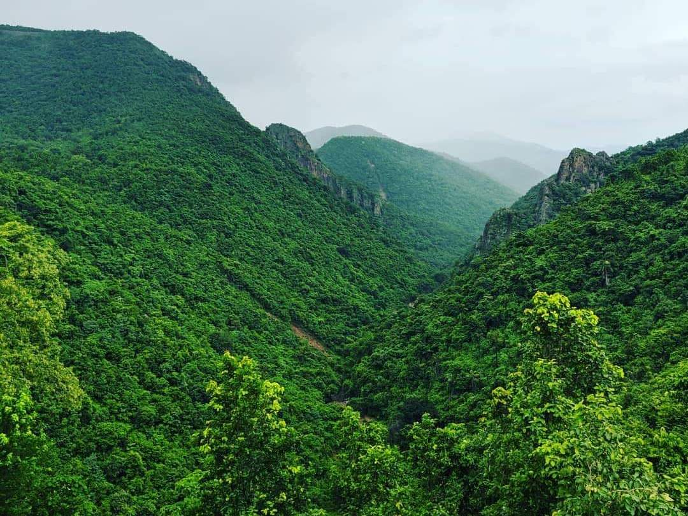

Explore The Tourist Attractions near Daringbadi
Mandasaru Kuti in Raikia Block
It is a beautiful and well-maintained park which gives the view of a lot of
mountains around. You can also hear your voice echoed
from the mountain if you could say out loud.

Lover’s Point
In Ludubanda is another place of tourist interest. It is 19 KMs,
away from Daringbadi on the way to Balliguda(Sub-Division HQ).
It is near a village called Kirikuti. The place is surrounded by
dense lush green forests and river flows with a gush over rocks.
There are a few natural cave formations in its vicinity. One could
organize a picnic and just enjoy its pristine beauty.
Emu Bird Sanctuary
An Emu farm, near Dadubada, is also a place of tourist interest. It
is a private farm with a big flock of Emu birds. The place is worth a visit.
Midubanda Waterfall
also called Dasingbadi Waterfall, it a waterfall that is deep inside
the forest with breathtaking splendour. It is located 15 KMs away
from Daringdabi on the way to Bamunigam.
Pangali Valley
This place falls while returning from Midubanda Waterfall to Pine
Forest & offers a breathtaking view of the green mountains.
This place is ideal for having some amazing photo sessions with family and friends.
Pine forest and Duluri River
The pine forest is 2 Kms away from the little tribal town
Daringbadi, towards the south. Tall pine green belt is spread on
both sides of the road to Baunigam. The plantation was made in
the early seventies by the forest department. The Duluri River
flows along the pine forest, enhancing the beauty of the landscape. The river rolls over a stony bed,
which attracts people for picnics.

Coffee Plantation Garden
It is another attraction of the hill station. It is spread over 45
hectares of land and managed by Soil Conservation Department
of Odisha. The garden is covered with tall “Silver Oak” trees and twining around the trunk
and the bark of the mighty trees are the little, hot black pepper creepers.
The shade of the garden is fascinating. One could spend hours under its shade.
Hill View Park
It is a major attraction of Daringbadi with a watchtower,
a children park and much more. One can enjoy the view of endless hills,
beautiful valleys, and the pine forests from its
cradle. The fountain and the garden add colour to it.
Nature’s Park also called Butterfly Park
It is an eco-park made by Forest department, Govt. of Odisha where there exists
medicinal garden, butterfly park with a rockery surrounded by dense forest.
The Butterfly Garden is a beautiful flowering garden inside the Nature’s Park .
True to its name, you can spot a number of butterflies there.
Sunset Point(Silent Valley)
This is a beautiful view point. From the vantage point, the entire valley
can be seen and is the best place to watch the sunset.
It is the last spot of the day where you can experience the amazing sunset
and have some fantastic photo sessions. Our Luxury
Resort – Utopia Resort could be clearly seen from this point.